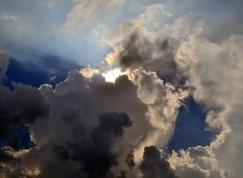
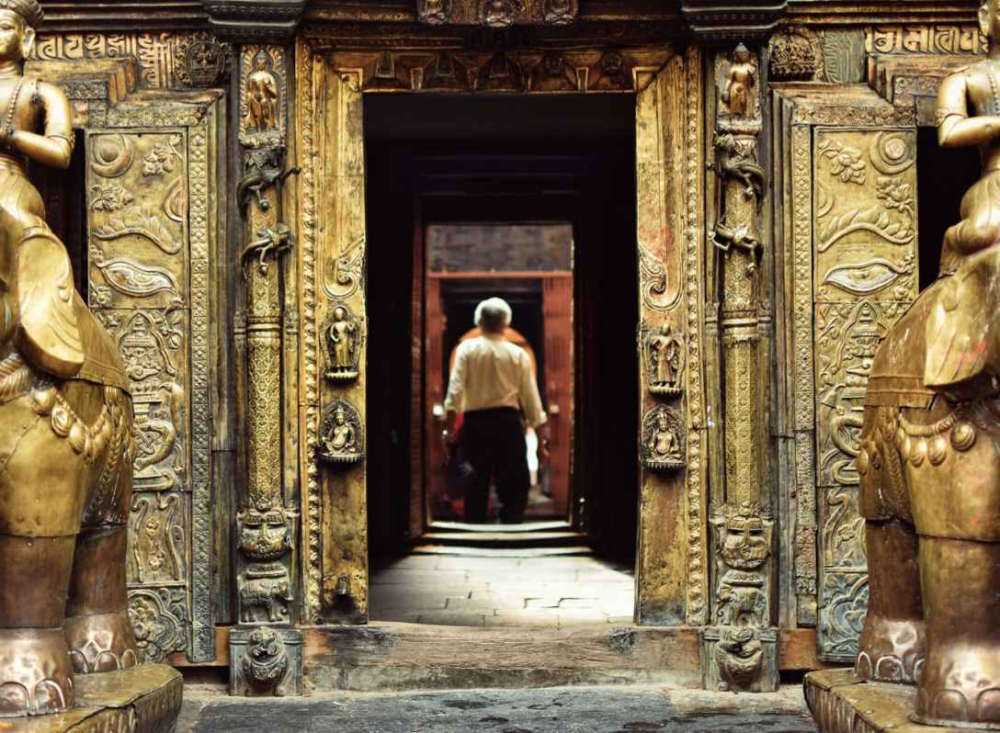
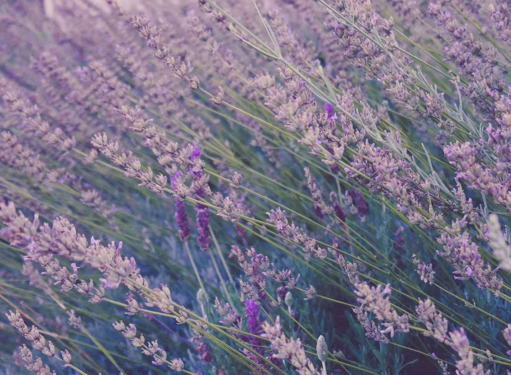
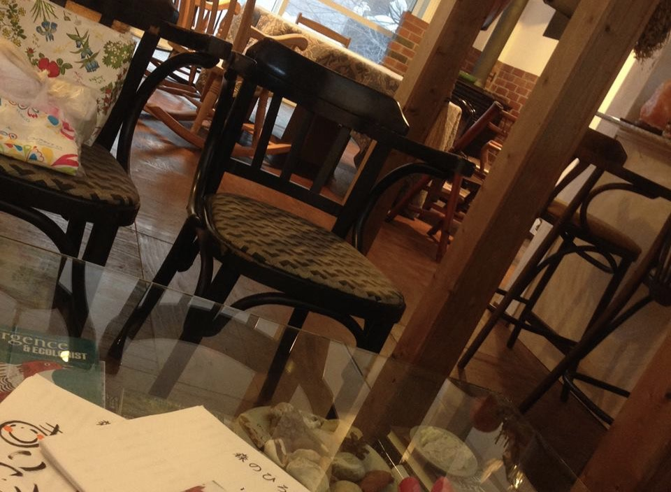

| アナスタシアによせて ３ 思考の創造力 | |
| 堀田真紀子 | |
| (2017) | |

チャプタ 1
闇と光、どちらの思考？
私たちが心に思い描き、願うものは、目に見えない思考の次元ですでに物質化されていく。私たちの運命も、私たち自身の思考の力で創造できる。
アナスタシア・シリーズ全体に繰り返し登場するテーマでもある。
思考の力が実際に、どんなふうに作用して現実をつくっていくか。これについていい例が、『私たちは何者なのか?』の「偶然を操ってるのは誰？」の章以下にある。
『共同の創造』を書くためにキプロス島に滞在していたとき、ウラジミールが欲しいと思ったものが、偶然の出会いや出来事の形をとって次々と連鎖的に現れ、本の完成をうながしていったというものだ。例えば、言葉の障害を感じず、一人静かになれる場所が欲しい、アフロディーテの孫のような美女に会いたい・・・などなど。それを口にした鼻先で、すべて現実のものとなる様子には、周りでその様子を目撃した人たちも、驚くほどのものだった。
そのものすごさに、ある講演者が、見えざる何らかの勢力がウラジミールの人生を操っていて、ウラジミールはその操り人形にすぎないのではないかとの見解を表明。その話を聞いたウラジミールはいたくショックを受け、この「勢力」から独立したことをやらかそうと自暴自棄になって、酒と女とお金儲けの誘惑に乗ってしまう。そして危うく命を落としそうになるわけだが、しかし、そんな彼をまたもや助けに現れたアナスタシアによると、彼のために現れた一連の出来事の連鎖を操っていたのは、他でもないウラジミール自身。人が何かを強く願うと、宇宙の力がその応援に駆けつける。その力は光の勢力の場合もあれば、死と破壊に突き進む闇の勢力の場合もある。
とくに、彼らが特に重要だと判断した願いには、多くの力が集まり、信じられないような奇跡が起こることもある。自分と家族だけに関わるような個人的な願い、「池」を願っても実現しないけれど、多くの人の運命に関わる「海」を願うとしばしば実現してしまうのはそのせいだ。
しかし、それらの力自体、あくまで人間の「願い」に仕え、その実現のためにエネルギーを与え、シンクロニシティを起こしお膳立てをしてくれる「下男」にすぎない。その巨大な力を集めながら、それで何をやるかは、私たちに任せられている。この意味で、人間こそが、宇宙の統治者。それがこの本のタイトル『私たちは何者なのか?』の答えになってる。
他でもない私たちのすべて、一人一人に、直接、そんなに巨大な力が、任されてる。となると、それは、いろんな危険とも隣り合わせ。どんな意識に焦点を合わせた思考を発するかで、おそろしい事態が生まれる。
たとえば、不思議な偶然が続いたのは、自分をマリオネットにして操り、自分の意図を実現しようとする「勢力」介入のせいだと思いこんで、その影響下からなんとか逃れようと自暴自棄になり、酒と女と金儲けの誘惑にのったときのウラジーミルの転落ぶりの物凄さ。
たまたま現れた友達が紹介した女性がサディストだったりと、滅多にないことが平然と起こるストーリー展開。彼がキプロス島にいたのと負けずとも劣らぬ、偶然とは思えぬ偶然、シンクロニシティの連鎖次々と起こりはじめる。ただ、違いは、今度それは、彼をまっすぐに破滅に導こうとしていること。つまり今度は、闇の勢力の助けがどっと彼を助けに現れて、彼の思考を現実化しようとしはじめたのだ。
どちらの道を選ぶか、それは私たち一人ひとりの思考、何を思うかにかかってる。
とすると、思考の巨大な力を解き放つための方法を学ぶ前に、私たちがまず、是非ともしなければならないのは、自分がどちらのサイドにいるか、チェックする習慣をつけること。
ウラジーミルのこの時の彼のふるまいを非難するのはたやすい。けれど、彼だけじゃない。今の世の中の趨勢は、闇の勢力とともに動き、自分たちの思考の力を使っているわけだもの。そうでないと、こんな世界が生まれているはずがない。
闇の勢力は、私たち全てのふだんの心に深く根を張るエゴの働きと連動してるって考えるとどうだろう？
「エゴ」という言葉で私が意味しているのは、自分がどんなに恵まれているかを眼中に入れず、欠けているところ、不十分なところにばかり目を向ける傾向。いつも、このままだと大変なことになると、自分を守るため、サバイバルのための行動にかまけてる。それを確実にするために、必要以上を取り、ためこみ、競争し、一番になろうとし、実際よりも自分を大きく見せ、他を支配しコントロールしようとする部分・・・
実際、自暴自棄に走って酒と女とお金儲けにおぼれようとしていた時のウラジーミルには、エゴに従っていたあらゆる兆候がみられる。自分の力を信じられなくなっていること、被害妄想に陥ってること、だからこそ、強さをみせつけようと躍起になってるところなど。
自分の中のこの部分にしたがう時、私たちは闇の勢力の応援の下に働いている。
たとえば、今この瞬間、自分はそうしていないだろうか？
とはいえ、一時的にそちらに意識をさらわれても、大丈夫。いつでも元に戻ってこれるから。いつも危機一髪のところで、アナスタシアに助けられるウラジーミルのように。
アナスタシアが直接助けに来てくれるのは無理でも、心の中で、「純粋な意図」を保っている部分、自分のためでなく、全てのものの癒しと調和のために身を捧げたいっていつも思ってる部分、つまり私たちのたましいに意識の焦点をずらす。そうすれば、エネルギーの次元で、光の勢力に属する存在が、たちまち助けに馳せ参じてくれる。その中には、アナスタシア自身のエネルギーも加わっているかもしれない。
そうして、意識の舵を光の方にとりなおし、自己訂正するたびに、私たちは闇の勢力に意識をささげ加担するのをやめ、大惨事をくい止めてるんだって思う。
実際、その人のエゴに当たる闇の部分と、たましいに当たる光の部分は、しばしば、別人格のようにふるまう。たとえば、怒りに身をまかせ、乱暴をはたらいて、自分や周りの人をめちゃくちゃにしながら、あとで我に帰ると、「どうかしてたわ」と思う。私はドイツに住んでいたことがあるけれど、戦争中、ユダヤ人虐殺に関わった人たちが、実はとてもやさしいおじさんで、子供達や動物が大好き・・・なんて話、よく聞いたことがある。光と闇、どちらの極にも突っ走ることができることが私たちにはできて、一旦チョイスがなされると、たちまちそちらのサイドの宇宙の力が加担して、とくに闇の側に引きずられる時には、憑依されたようになってしまう。でもあくまで、チョイスをするのは、私たち自身。
ウラジーミルのように、たましいの部分では『共同の創造』を、あらゆる不思議なシンクロニシティを起こし書き上げることができた人が、同時にエゴの部分では落ちるだけ落ちるなんてことも、よくある話。
そんなふうに考えるにつけ、ましてや自分が、ウラジーミルの弱さを批判なんてできる立場には、全然いないってことも見えてくる。そうすると、ウラジミールも、みんなも、闇のただなかで、なんとか光に向けて格闘する仲間なんだってことが見えてくる。

チャプタ 2
崇拝しない！
どうして私たちがそんなに闇の方に引きずられやすいか。そこには、私たちが今、生きる時代の性質も関わってくる。
アナスタシアによると、地上でなんども繰りかえされた文明の周期がある。まずは楽園の中で神と共同の創造をしながら暮らす幸福な人たちからなるヴェド期。
ヴェド期の終わり頃、人間の思考の創造力が、とくにたくさんの人間が集合的に力を合わせた時に巨大になることに人々が気づき、それを意図的に利用して、さまざまなことを成し遂げるために利用し始めた。そうしてはじまったのが、「イメージ期」。ピラミッドなど、古代遺跡を見て、どうしてこんな巨大で重い石を、こんなに整然と組み立てられたか、私たちは驚嘆するけれど、種明かしはこの集合的な思考だ。実際、それは今のテクノロジーの代わりのようなものだった。
集合的な思考を無駄なく使うためには、これを集める焦点になる共通のイメージがあると、いいことにも人々は気づいた。多神教の神々は、もともと、そうしてできた。皆の思考のエネルギーを合流させ、集めるための道具としてつくられていたものだったのだという。たとえば、雨を降らしたり、豊作をもたらすために、みんなの心をそちらに向けるために、豊穣の女神のイメージを使ったりしていた。
でも、この巨大な力を、皆のため、宇宙の全ての力を調和させるためにではなく、その中の一つだけ優位に立たせ、自分たちの支配を確立するために独占したいと思う人が現れる。アナスタシアが「僧官たち」と呼ぶ人たちだ。
その方法は、簡単。だってすでに、皆の意識の力が集まる焦点、多神教の神々はあるのだから。それを乗っ取って、横領してしまえばいいだけ。
そのためには、まず、自分たちの集合意識の力で起こしたことを、すべて神のおかげだってまず思いこんでもらう。たとえば、水の神、たとえばサラスヴァーティのイメージに向けて、雨が降るイメージをみんなで一斉に送ったから、みんなの力で雨を降らせたのではなく、サラスヴァーティのおかげで雨が降ったと読み替える。本当はそこで働いたのは自分たちの力なのに！
かくして、みんなの意識を集合させる道具として使われてきた多神教のイメージも、おすがり、依存する対象にされてしまった。
アナスタシアもいうように、「崇拝は、人間だけに特有な意識の力を、崇拝者から取り上げてしまう」。人の意識の力は、巨大な力を持っているのに、人は何かを崇拝するたびに、それを手放して、いとも簡単に崇拝対象にあげてしまう。
決定的だったのは、この手の崇拝がはじまると同時に、自分たちは無力な存在で、神様抜きでは決定的なことは何もできないという無力感とお任せ体質が人間に刷りこまれてしまったこと！
と同時に、私たちの方でできることといえば、神様に助けてもらうために、神様のご機嫌をとることしかない！という刷り込みもされてしまった！ たとえば、神様に助けてもらうその引き換えに、お供え物や、犠牲をささげたりしなきゃいけない。神殿を立て、儀式も行わなければならない、しかしそのためには、正しい手続きというものがあって、違うやり方でやると、効果がない。それどころか、逆に神様を怒らせてしまう。それを学ばなきゃいけない。それが書いてある書物を読むために、難しい言葉をマスターしなきゃいけない・・・などなど。やらなきゃいけないことが、山のように生まれてくる。
これは、そもそもの目的だった、ゆたかに、しあわせに生きていくには直接関係ないことばかり。間接的手続きの迷路のようなもので、どちらかというと、深みにはまればはまるほど、ゆたかに、幸せに生きることそのものから、遠ざかっていく。
といっても、それでたくさんの人たちが暮らしを立てるようになったわけだけど。これは「僧官たち」が牛耳る、アナスタシアが「オカルト期」とよばれる時代が始まったから。
「僧官たち」は、この手の神様のイメージの一番そばにいることで、そこに集まるみんなの意識の力、ご機嫌取りのための富や労働などをどんどん吸い上げることができるのに気づいた人たち。それらを独占的に集めることができれば、誰よりも力を持ち、優位に立って、トップダウンに皆を支配・コントロールすることができる。まるで映画の『マトリックス』そっくり！
初期の国家権力は、どこでも制度的宗教と結びついてたのは、偶然じゃない。背後で働いていたのは、このヴァキュームポンプみたいなはたらきをしたんだ。
この魔法にかけられた状態から目覚めて、ふたたび私たち一人ひとりの意識の力、思考の創造力を、今、私たちは今、取り戻そうとしているわけだ。
もちろん、神様仏様を正しく崇拝するために、あれこれ思い悩む人は、今はそんなにいなくなった。でも、物神崇拝という、その現代バージョンだったら、まだまだ健在だ。何かすごい技術革新や、すべての問題を解決するようなすばらしいものがつくられて、それでみんな幸せになるって思ってる。完璧なモノの「所有」こそ、自分が力のある、趣味のいい、ひとかどの人物だって証明してくれる。と言うことは、それらなしでは、私たちは無力だって言ってるのと同じこと。つまり崇拝・依存の対象が、自分の「外」にいる人物から、宗教者から、やはり自分の「外」にあるモノに移ってるだけ。自分の「中」にある神の与えた完璧な力だけは、使おうとしないし、見向きもしない点では、昔と変わらない。
それに、歩けるのに義足をつけてると本当に歩けなくなるように、外的なモノに依存するに従って、人間の力は萎えていった。たとえば電話がない時代には、もっとテレパシーで通じ合えたし、テレビがなくても、イマジネーションの力で生き生きした映像を楽しむ力も、人間にはそもそも備わっていたのだという。
「これさえ持ったら幸せになれる！」つまり「救われる！」と家や車などのモノを手に入れる。そのためのお金、ローンを払い続けるために、好きでもない仕事に一生しばりつけられて、あれ、幸せはどこにいったの？ これも、「手続き」が自己目的化することで、いつまでもゴールに行き着けなくなる迷路の一つだっていえないだろうか？ その迷路にはまった人たちから、どんどん生き血を吸い上げ、搾取し肥え太っていくのが資本主義だ。アナスタシアは実際、現代の「僧官たち」は、資本をあやつる人たちだと言っている。
この魔法の呪縛から解放されるために私たちができる第一歩は、自分の外にあるものを崇拝しないこと！自分たちの中に、宇宙の最高の創造的な力が眠っていて、それは解き放たれるのを待ってるって確信することだ。そのためにも、崇拝してはいけない！
これは、『共同の創造』の中の「他の世界」以下に語られている宇宙人の話とも符合する。彼らの兵器は「人間の意識と感情によるエネルギー」だった。それは何かを「崇拝」すること、つまり自分たちよりも強く優れたものがいると思いこむことで人間が自らすすんでどんどん手放していった意識の力を集めたもの。「宇宙に人間よりも強い誰かがいるという人間の意識、人間より、神の創造物である人間よりも！こういった意識が濃縮され、人間自身を打ち負かそうとしている！」
影で牛耳ってる「僧官たち」や、合理主義フリークの宇宙人の存在を信じれない人も、もちろんいるだろう。
だけど、そんな人も、ゆたかに、しあわせに生きていこうとしながら、頑張れば頑張るほどそこからどんどん遠ざかってしまうような、いらぬ手続きの迷路の中にこれ以上、迷いこみたくはないと思うはず。また、これをやめるには、自分の外にある何かにおすがりするのをやめて、自分の頭で考えはじめる必要があるってこと。
「誰も崇拝してはいけない」と言うのは、とくに、今地球に住んでる人にとって、真実だとアナスタシアはいう。
キリストやモハメッド、ブッダたちは、崇拝の対象になることで、たくさんの人の意識の力を集めてきた。けれど今、それを、地球に住む人々に配ろうとしていると、アナスタシアは言う。「地球の新しい千年紀がやってくる。そのとき、神のようになった人々が地球に住む。これらのエネルギーを受け入れられる、自覚のある人々が」（『私たちは何者か?』「あなたの願い」）。そんな時代に住む「自覚のある人々」の一人にとって、キリストもブッダも自分と対等の存在、「兄」にすぎない。
自分の外にあるものを崇拝対象にして、それに従う集合意識の時代はもう終わった。今は、一人一人の個人が、自分の中に神聖な力を見出し、それに従って自由に生きる時代だ。すべての人間が、宇宙の統治者であり、完全に平等。
誰かを崇拝して、その人の意図、その人の思考を実現しようとすることは、宇宙の統治者としての責任を放棄することにつながる。
こうした時代認識は、たとえばルドルフ・シュタイナーなども持っていたもの。彼は権威主義的な時代への退行をいましめながら、一人一人が自分の中の「道徳的なファンタジー」に従うべきだとする「自由の哲学」を唱えたものだった。
というわけで、私たちもアナスタシアをはじめ、自分の外にあるどんなものも崇拝しないようにしよう。これはアナスタシア自身、ウラジーミルに対し、何度も戒めてること。平等な者たち同士の間にしか、本当の意味の愛は存在しないからだ。この辺りは、アナスタシアの個人的な感情もふくまれてる気がするけれど、真実なことに変わりはない。愛は、完全に平等な人たち同士が、横並びになって、ともに神のインスピレーションに包まれて共同の創造をするようにうながすもの。子供、愛の園をはじめ、あらゆる生命あふれたものがそこから生まれてくる。
自分の「外」に見出されるどんな神にも、依存しない、頼らないこと。これは、闇の勢力の時間域を超えて、そのプログラムの外にみんなを運ぼうとするアナスタシアのプロジェクトも、ここのことと絡んでくる。
『生命のエネルギー』の中で、アナスタシアが闇の勢力の猛攻撃を受けた話が出てくる。ぼろぼろになって、野原に倒れるアナスタシア。彼女の周りに、また光の球が現れ、彼女を助けようと手をさしのべる。それをアナスタシアはまた拒む。そうして自分で立ち上がり、湖の方へ歩いて行こうとする。それをまた手伝おうと、光の輪は彼女のために虹色のアーチに彩られた道を用意する。けれど、その道もアナスタシアは避けて、よろめきながら、自力で湖の方へ歩いて行く。すると、あたりを取り巻く光が、赤ちゃんの姿になって、現れる。アナスタシアのおじいさんの話によると、それは創造主としての神の具現。しかしアナスタシアは、その姿に挨拶を送りながらも、その脇も通り過ぎて、湖に向かう。
なんだか、やせ我慢しているだけみたいに見える。けれど、アナスタシアの曽祖父は、めずらしく感情をあらわにして、涙をうかべて森の中を歩きながら、祖父に、今、アナスタシアはとうとう「闇の勢力の時間域を超えた」と告げたのだった。
といっても、神そのものの外的顕現と思われる、明らかに光の勢力の助けまで拒むとは！ なぜそうしたか。祖父がウラジーミルに語ったように、そうすることで、人間は、神に、自分と全く等しいものとして創造された完璧な存在、宇宙の全ての力を内に備えた宇宙の統治者なので、手を貸してもらう必要なんてないんだってことを、身を持って証明しようとしたのだ。そして、この態度こそ、闇の勢力を超えていくための決定的な最後の一歩になった。
というのも、「宇宙に人間よりも強い誰かがいるという人間の意識こそ、闇の勢力に力を与えていた」ことを思い出すと、それも納得がいく。この全く逆のことをやったわけだから。
闇の勢力そのものが、人間の「自分は無力で、外的なものに頼らないと生きていけない」という思いによって、養われてきた。オカルトの世界を牛耳る６人の僧侶たちは、教育やメディアなどあらゆる手段を尽くしてこの考えを皆に吹き込むことで、思考の速度を自分たちよりずっと遅め、自分たちの支配者としての優位を守ることに躍起になっている。
しかし神そのものの外的顕現と思われるものからの助けすら拒んだのは、一見、傲慢に見える。でも、そうすることで、神の創造は完璧だったってことを示したわけだから、逆に擁護したと見ることもできる。
そこにあるのは、『共同の創造』の「三つの祈りのことば」の中のアナスタシアの情熱的な祈りと同じ態度だ。
私のお父様、あなたはいたるところに遍在している
私はあなたの創造の中の、あなたの娘
私は罪と弱さを自分に認めない
あなたの偉業に値する者となる
私のお父様 あなたはいたるところに遍在している
私はあなたの喜びのための、あなたの娘
あなたの栄光を増大させる
来たる時代は、皆があなたの夢の中に生きるでしょう
きっとそうなる！ わたしはそうしたい！ 私はあなたの娘
私のお父様、あなたはいたるところに遍在している
アナスタシアの「神」と、先ほどのおすがり対象の「神様」と紛らわしいと思われる人もいるかもしれない。でも、これまでの話についてきて来られた方には、違いは歴然としてわかるはず。アナスタシアの神は、すべての生きとし生けるものに浸透しながら、生命力、再生力、調和や美の源となり、継続的な創造を続ける神。でも、その同じ源を、神は全ての人間の中にすでに与えてる。それをもとにして、神と全く対等の立場で、一緒に「共同の創造」を行ってほしいって思ってる。そこには、おすがりさせてくれる余地なんて、どこにもない！
というわけで、私たちも、外にあるものに頼りたくなる誘惑に負けないで、自分の外にある何者も崇拝しない、頼らないことにしよう。その代わりに、自分の中にある、神に与えられた完璧な力をこそ探し、使うことにしよう。そのために動員されるものこそ、まさに、思考の力。この本のテーマだ！ これを「僧官たち」や「宇宙人」、あるいは何と呼んでもいいから、別の人や存在にハイジャックされ、いいように利用されるのもこれでおしまいにしよう。そのためにはまずこの力をまずしっかり理解しなくては！
チャプタ 3
思考の創造力発揮の秘訣
「思考のエネルギーほど力をもっているものは、宇宙に存在しない。自分をどう見るかもふくめ、私たちが、目にするもの全ては、私たちの思考のエネルギーから作られてるの」とアナスタシアも言っている。
人間の創造力を神に匹敵するものにもしてるその思考の力。その力は巨大なので、自分が今、闇の勢力と光の勢力、どちらを集めているか意識しながら使わないと、大変なことになることもわかった。
また、これを発揮するには、外にあるものを崇拝せず、頼らず、自分の頭で考える自立した態度がいるというのもわかった。
でも、具体的にどうすればいいの？ というわけで、ところで、『生命のエネルギー』の話に戻ろう。
この本ではまず、これほど力を持ってるはずの私たちの思考が、なかなか現実を変える力を持たないのはなぜかについて、説明されてる。たとえば、一生懸命なりたい未来をイメージして、そのことばかり考えているのに、一向に変化がない人の方がずっと多いのはなぜか。
その説明をするために、アナスタシアはいくつかたとえ話をしている。
一つ目のたとえ話。お金がないので、神様に祈り、宝くじで一山当てさせてくれと頼んだ男の話。一生懸命、その事ばかり考えていたのに、相変わらずまずしいまま。神様に、言うことをきいてくれなかったじゃないかと恨み言をいったら、神様の返事は「お前は宝くじの券をまだ買っていないではないか？」行動が伴わないと、もちろん思考は現実のものにならない。私たちは、神の共同の創造なのだから。
二つ目のたとえ話。街の小さな店でタバコ売りをして、よっぱらった客からからかわれているやっぱりさえない女の子の話をする。けれどその女の子は、私の人生はこんなんじゃない、イギリス貴族の奥様になるの、と宣言。ますます笑われるが、本当にそうなろうと決意して、上品な英語、ダンス、マナー、教養のある会話術などすべて身につけ、またじぶんそのイメージにあわせて、変身してしまう。またお金を節約して、素敵な服装をして、イギリスに出かける。すると本当にイギリス貴族と出会い、結ばれた。
たくさんの女の子が思い描くありふれた夢だけど、ほとんどの場合、実現しないのは、心に思い描くだけで何にもしないから。宝くじの券すら買っていないんじゃ、思考も現実化しようがない。ゴールについて考えたり、イメージを思い描くだけじゃなくて、ちゃんと行動に出ることだ。まずは自分自身から、その主人公になりきり、なりきった自分を物質的な現実にも落としこむために、あらゆる努力を惜しまない。これが違いを生むというわけだ。
三つ目のたとえ話。ゴミだめで生きる浮浪者の話をする。ゴミの中から、空き瓶など、お金に換金してもらえるものを探し出し、集めて暮らしてる。それを少しでもためこんで、誰にも盗まれないようにするにはどうすればいいか、そのことばかり考えて暮らしてる。ウラジーミルは彼に、いい仕事を紹介しようとする。けれどその面接に言ってる間に、どうせ俺のためたものを盗むんだろうと言って、相手にしない。
この場合、ちゃんと思考は現実化してる。でも、その思考そのものが、「自分の人生はこんなもの」という思いこみの監獄の中で、ぐるぐる回ってるだけなので、目の前に、すばらしいチャンスが横たわっていても、目に入らなくなっている。
「これまで通り」の現実は、どんなに惨めなものでも、慣れ親しんだ安全なもの。私たちのエゴは、この安全圏とどまって、まるでエンドレステープのように、過去のパターンを再生しつづけるのが好きだ。
ゴミだめに住み続けるような極端なところまでいかなくても、人生、どこへいっても、誰と会っても、似たような人間関係、似たような境遇に自分を追い込んで、似たようなストーリーのドラマを延々と繰り返しているような気がすることなら、あなたにも身の覚えがあるかもしれない。セルフイメージがもう固まってしまっていて、他の可能性の人生なんて、もう考えられなくなってる。この「ゴミ溜め」の磁場から自分を断ち切って自由にしてはじめて、思考は自由に羽ばたいていくことができる。
つまり、思考の巨大な力を発動させるためには、まず、望ましい思考以外のあらゆる古い思考の「ゴミ」を、私たちの意識から一掃する浄化をしなければならないというのである。
この点をはっきりさせるために、アナスタシアは病気を治したり、奇跡を起こすイコンの話をする。単なる板きれがそんな力を持つようになったのか。まず画家は、絵を描く前に、自分の思考の力を最大化するために、自分の体から望ましくないものをすべて取り去り、イコンを描く以外のあらゆることから身を引き離し、無関心になり、一切考えなくなるような浄化を行った。
そうして、イコンを描くことだけに、自分の思考の力を集中させた。そうすることで、画家がそこにこめようとした思考の力は最大化された。
と同時に、絵ができた後も、何百年にわたり、たくさんの人がこのイコンに祈りを捧げた。その人たち一人一人の思考の力が、そこにまた積もり積もっていく。そしてますますパワフルな力がイコンから放射されるようになった。
四つめのたとえ話。倦怠期の中年夫婦。こんなつまらない日常が、これからも一生続くなんて耐えられない、助けてくれと、男の方が神に祈る。すると、神は、お前の妻を女神にしようと言う。ただ、いきなり女神になると皆、びっくりするから、毎日ほんの少しずつ、変えることにすると。
その後彼は、妻がどう変わるか、興味津々、いつもは家に帰るなりテレビを見ているのに、彼女を見つめることの方が多くなる。すると彼女の方では、それに気づき、恥じらい、ほおを染める。すると、本当に美しくなってきたぞ、と彼はうなづき、女神に変身した後、彼女に愛想をつかされないようにと、自分の行いも正し、やさしく彼女に振る舞う。すると彼女は、幸福に酔いしれ、ますます美しく、若々しくなる。そこで彼はますます、そんな彼女にふさわしい自分でありたいと努力する・・・この循環が続くうちに、二人はお互いを素晴らしいと思い、仲良くなり、子供も生まれ、幸せになると言う話。
ただこの話のオチは、ウラジーミルも見破ったように、神の方では実は何にもしていないこと。「妻は少しずつ女神になる」という思考を吹き込んで、「老けていくばかりのがさつな女」だという、その前に彼の中にあったイメージを追い払い、反対方向に思考が現実を形成する力を誘導しただけだ。あとは彼と妻の思考のなせるわざ。妻が美しく見えてきたのは、思い込みからくる錯覚だった、それがこの思い込みに誘導されてポジティブに変貌を遂げた二人の人間関係の中で増幅されただけだって、指摘するのはたやすい。けれど、実際にそれが新たな現実をつくり、その後の二人の人生航路を大きく変えたのだ。何が客観的な現実で、何が思い込みかといった議論なんて、そこで生まれた幸せな現実の前では、意味を失ってしまう。
と言うわけで、このたとえ話の教訓も見えてくる。単に何かを思考しても、半信半疑だと力を持たない。絶対そうなるのだって一心に信じて、実際にそう見えるところまでいかなきゃいけない。つまり新たな思考を強く信じ込んで、ものを見る時の前提を一変させ、知覚を変えるところまでいく必要があるってこと。
この話は他のたとえ話の教訓とも連動してくる。この思考で生まれつつある世界に相応しく自分を変える努力をしたり、それを行動に移す（男は妻にやさしくなり、女神に相応しいプレゼントをする）と、それが連鎖反応を起こし、相手を変え（妻は、幸せに輝いて実際美しくなる）、て、フィードバックして戻ってきて彼の思考を強化する（やっぱり女神になってきたぞ）。この循環が、思考の現実化を進めるのだ。
要するに、一つの思考を、単に頭で思い描き、イメージするだけでなく、その思考そのものに全身全霊で「なる」。そして「思い」を態度と行動で、不断にそれを表現する。すると、実際にそれが現実になっている確証、フィードバックが今度は周りから返ってくる。それを受け取っては、ますます確信を高める・・・そんな循環がいるということになるだろう。
よく、ポジティブ・シンキングなどというけれど、自分が望むこと以外、他の可能性など、一切考えないようにって意図的に頑張ってるだけでは、まだまだ。他の可能性が考えられないほど、それを信じきる。態度や行動を全て変えて、別人のように振る舞いはじめ、世界が実際そのように見えてくる、知覚が変わるまでは至らない。違う体験が始まるまでにならないと、だめなんだ。しあわせな体験が！
ここで、思考、態度、行動、知覚を変化させながら、現実化をめざしていることが、しあわせや美や、ゆたかさ、やさしさといった魂の特性だってことが、実は一番大切なのかもしれない。さっきのイギリス貴族の花嫁の話もそうだけど。これは、現実化しやすい。そのためには、私たちは本来、完璧に作られているってこと、その完璧さは、今もそっくりそのまま私たちの心の中にあることを思い出し、それを感じて、表現していくだけでいいのだから。
エゴは、それぞればらばらな「私」に「私こそ！」と固執する傾向がある。でも、魂の特性を表に出そうとすると、周りにどんどん連鎖反応が起こる。魂はつながっているので、魂の特性が表に出ると、自分の周りの魂も連鎖的に目覚めだす。逆も然り。目の前の人を、美しく、やさしく、ゆたかで完璧な存在として、つまり魂としてみることで、自分の魂も目覚めて、自分の方も、美しく、やさしく、ゆたかになっていく。魂の世界は鏡写しにひろがっていく。自分は今、どんな状態、どれだけスピリチュアルなのだろう？なんて考える必要はない。自分のまわりに鏡写しにされている人や、出来事、状況を見ればいいだけ。
魂の特性を現実化するときは、私の中にあるものを鏡写しにしながら、どんどん連鎖反応を起こしていく、魂そのものの中にある、この現実化の力もあてこめる。
ただそれをやるには、エゴの視点、発想から、徹底的に浄化する必要がある。えっ？ イギリス貴族の花嫁になった女の子も、浄化されていたの？と思われるかもしれない。謙遜、慎ましやかさ、身の丈を知っていることこそ美徳だって考える文化の中にいるからね。
でも、本来、あらゆる人間は、いくら自己評価を高めても、足りない。神に完璧に作られ、対等に創造できる存在なのだというのは、アナスタシアシリーズの一貫したテーマ。その気高さ、美しさ、ゆたかさを、その時代、状況で素直に表現するのは、完全に魂の側にあると思う。逆に自己評価低い、「自分の人生はこんなもの」と決めこんだカプセルのように閉じた世界の中でぐるぐるまわっている方が、エゴに囚われているってことになる。
ただ、イギリス貴族の花嫁になった女の子も、市場で人にバカにされて、「見返してやる」と思った時点ではエゴの磁場にいる。でも、その後の数々の行動と態度の変化、フィードバックによる確信が強化されるにつれ、実際、それが当然、っていえるようなふさわしい存在になりきったときには、魂の特性が、輝き出てる。でそれを鏡写しにするような世界に住み始めたわけだ。
ただし、魂の壮麗さを鏡写しにするような現実の変化がどんどん起こり始めたからといって、そんな自分は特別だと思ったり、そこで与えられたことを、人を圧倒したり、コントロールして自分の望むことをさせるために利用しようとしたら、たちまちエゴの磁場に落ちこんでしまうけれどね。
たましいの力はあくまで、あらゆる人が持っている、あらゆる存在のためのものだから。
エゴから浄化するといえば、イメージが事実と対応するかを考え、懐疑的になったり、シニカルになったり、批判的になるのも、エゴの働き。これも警戒する必要がある。
実際、現実化直前にまで煮詰められたイメージが、実際に現実をつくっていくその巨大な創造力を片鱗でも感じることができたら、そのイメージは事実と対応するかなんて考えること自体、ナンセンスに思えてくる。その偉大な創造力の発現を食い止める冒涜とさえいえるかもしれない。
倦怠期の夫婦の例をとれば、男が妻を女神のように見始めた時、「夢に浮かされたバカなこと言ってないで、その顔をよく見てごらん。シミもシワもちゃんとあるじゃないの」と誰かが忠告したとしよう。「客観的事実」を確認して、頭を冷やせと。そう言われて男は「正気に戻る」かもしれない。イメージは放って置かれ、忘れ去られるだろう。そのとき、その現実化の可能性すべても葬り去られる。その後の二人の幸せな日々も、子供の誕生も、しあわせに孫と暮らす日々も、ありえなかった。
だから、それに、もしそこに、純粋で、愛情深い、すばらしい思いに満たされたイメージがすでにあって、それに対応する現実が見つからなくても、だからといって、それを「夢物語だ！」などといって否定すべきではなく、逆に鼓舞して、応援してあげるべきなのだ。
とくにそれが、これからどんな形でも取り得る、生きたものの成長に関わる場合には。「キリストを生んだと心から信じる親たちが、キリストを本当に育て上げる」と、別のところでアナスタシアがいったように。
それは、現実に反しているのではなくて、現実になるために、もう少し時間と、エネルギーがいるだけに過ぎないのだから。
だから、あるイメージを現実にそれは実在するかどうかと疑ったり、批判的に吟味したり、否定するとき、
私たちはそのイメージから現実化のエネルギーを奪いとってしまう。
すばらしい将来の夢を描く。でも、描きながら、
「こんなすばらしいこと、ありえない！ なぜなら・・・・」と疑い始めた時点で、その現実化の力は萎縮し失われ、本当にありえないことになってしまう。
だとすれば、私たちがやるべきなのは、とにかく最高のイメージをつくって、その現実性を決して疑わないこと。それを強く念じて、それが実現したようすを全身で感じ、物理的現実に見られる、そのどんなに小さな萌芽も見逃さず、大喜びする。そうすることで、そのイメージにたえず、創造のエネルギーを注ぎ込むこと。
事実とは程遠いではないかと、とやかくいう人がいれば、そんな人に対しては、こういうべきだろう。「もう少し待って。そして疑わないで。そしたらきっと、物理的現実にも反映されるから」
つまり、夢から覚めるというより、ますます強く夢見る。もしその夢がいいものならば。そこに水を差し、冷ますようなことはしない。余計なことは考えないという、とてもシンプルなことを実行すればいいだけ。
たとえば、アナスタシアは実在するか？ と問う人多い。アナスタシアのイメージが世界に散らばったたくさんの読者の間に、実在するのは確か。とすれば、もしメグレさんの創作でも、アナスタシアのように振る舞う人たちはいるし、これからも出てくる。アナスタシアのイメージがこれだけ新たな現実をつくっていて、それが良いものであれば、それで十分じゃないかって思う。

チャプタ 4
アナスタ
思考の現実化のテーマについては、最終巻10巻目の『アナスタ』に、その集大成ともいうべき話が出てくる。これまで語ってきたこと全てが関わってくるし、その上、愛の次元の地所が、果たす役割などもからんでくるので、紹介しよう。
自分の運命の女の子を探しにタイガを出て、広い世界に出るのがヴォロージャの夢。ただ彼の住処には、彼の愛のシャワーを浴びるためには、何でもする、忠実な動物たちがいっぱいいる。もし僕が旅に出たら、この動物たちは寂しさのあまり死んでしまう。その悩みを解決するために、ヴォロージャはもう一人子供、かわいい妹をつくってよと、ウラジミールにせがみ、彼が若返るような薬草をつかったセラピーまでした。と同時に、自分が実はアナスタシアをどんなに愛しているかに気づき、そのことを受け入れていく。アナスタシアが背負ってる未知の世界へのおそれが、これまで暗雲のようにウラジーミルの心にたちこめて、アナスタシアへのこの愛にアクセスできなくしていたようだ。というわけで、アナスタシアもますます美しくなり、二番目の子供が生まれることになる。このあたりは8巻目の『新しい文明』の中の話。
10巻目の『アナスタ』では、その女の子がすでに生まれている。アナスタシアは、赤ちゃんのアナスタを授乳しながら、ウラジーミルに、すべての子どもには、父親、母親と、それぞれの側の祖先からの影響と同時に、輪廻転生を通して変わらないその子自身の魂が一つに合流していると語る。
「ではこの子の魂は、どんな魂なの？」とウラジーミルがたずねる。
そこでアナスタシアが語り始めた物語が、思考の力で、大惨事をくいとめた女の子の話を始める。
時代は氷河期の始まり。氷河が自分たちの地所に迫ってきたので、一族は、動物たちと一緒に移住を開始している。
みんな悲しみと不安に打ちひしがれている。どちらの方向に、どれだけ行けば安全なのかまったく見通しもつかぬまま。とりあえず、ここを出なきゃいけないのは確か・・・といった状況。
でもアナスタだけは、こんなときも底抜けに明るく、陽気。マンモスのダンと子猫のキティといっしょにふざけて、遊んでる。悲惨な状況がほとんど目に入らないほど、魂の特性であるよろこびと一体化してる様子。
一族の長で、賢者、長老のような存在のアナスタのひいおじいさんも、単に嘆くだけではない。ずっとなぜ氷河が自分たちの地所にせまっているのか、どうすればそれを避けれるのか考え続けいてる。でも、陰鬱な面持ち。ただ、そうしながらも、６歳の曾孫のアナスタのおふざけを眺めて、つられて思わず微笑む。
と同時に、ひいおじいさんは、アナスタのこれまでの思い出を回想している。
物覚えがとても早く、おませな女の子だった。動物を飼いならしたり、お花畑の世話をするのが大好きだった。
ある日、ひいおじいさんが、子供達に、いろんな動物が、どうすれば人間の役に立つか考える授業をしていたときに、蛇だけみんなどうすれば役に立つか、誰もわからなくて、みんなで頭をかかえていた。
するとある男の子が、蛇に牛の乳をごくごく吸ってもらって、人間のところまで来て、甕の中に吐き出すように訓練すれば、乳搾りの仕事が楽になると提案した。
その言葉に、アナスタは、「そんなことをすると、人間が牛になる！」と抗議。
「何のことを言っているかわからない、理解できるように説明しなさい！」と言われて、彼女は、
「蛇がミルクを運んでくると、人間は蛇にだけ感謝して、牛に感謝しなくなる。牛の喜びもなくなるし、牛の喜びを感じたときの人間のよろこびもなくなる。
ただ、運んできただけの蛇が、人間の感謝や愛情を吸い取っていく」と答える。
愛の次元をなりたたせるもの
牛のミルクを蛇に吸ってもらって、人間が飲みやすいように甕に吐き出すようにするアイデアに対して、アナスタが言ったこのコメントは、とても意味深い。何が愛の次元を成り立たせているのか、その後、私たちがいったいどうしてこれを失っていったのか、そして、大惨事を自ら招くような人間の生き方が、一体どこから始まったのか、そうした情報がここに全てこもってると思われるからだ。詳しくは『アナスタシアによせて ４』で述べたいと思うが、ここでは、その本質がやはり、生き物と人との心のかよいあいにあるとだけ、確認しておきたい。
蛇は自然のめぐみと、私たちの間にいる仲介者すべてのはじまりだ。たとえば、牛と対話しながら、牛との合意の元、自らの手で乳を絞り、「牛さん、ありがとう」と、声をかけ、牛を撫でたり、ハグするのが、愛の次元。でも、「蛇」という仲介者が幅をきかせはじめると、たとえばそこに、搾乳機という機械、乳を商売道具としてしかみなしていない酪農家、牛乳加工業者、パッキング工場、運送業者、店・・・といった仲介者が、牛と牛乳を飲む人の間にたくさん入りこんでくる。牛乳を口にする人が、これをくれた牛さんに感謝しようにも、よほど想像力のある人でないと無理な距離感がそこにある。
こうした一切のはじまりが、ここで語られる「蛇」だといえるかも。愛の次元を一つにまとめている、生き物との直接のふれあいから生まれる愛と感謝の循環を断ち切り、崩壊にみちびく最初の兆。
６歳にして愛の次元についてそこまで極めたアナスタは、実際、自分の住処をつくりたくてうずうずしていた。
笛を独特な調子でふくことで、熊に穴を掘らせ、マンモスに石を運ばせ、その穴に埋め込んで家の土台をつくり、あとは無数のツバメに土や藁を嘴に運ばせて、壁を作らせる古い祖先から引き継いだ方法も、正確に知っていた。
けれど、一族のしきたりでは、配偶者のいる成人しか家をつくってはならないことになっている。どうしても自分の住処をつくりたいとせがむアナスタ。曽祖父は、その気持ちそのものは、創造力を伸ばすいいチャンスだと思い、子供達にとりあえず、住処のプランを作らせて、その中の一番優れたものを選んでから、それをつくるべきかどうか、皆に相談しようと決めた。
アナスタが考えたプランは、家の南に丸太でできた蜂の巣箱があり、そこに陽が当たって温度が上がると、蜂は巣の中の温度を下げようとして、羽をはためかせる。すると巣の中に集められた花粉と、その香りが、家全体に送られていくという仕掛けつきのもので、そんなアイデアは、これまで前代未聞。一番優れているものに選ばれただけでなく、実際につくってみようということになった。問題はアナスタが、配偶者を持つには小さすぎることだが、アランという８歳上のハンサムな男の子、アナスタの次に優れた住処のプランを作った男の子が、将来いっしょになろうと彼女にプロポーズすることで、これも解決した。６歳にして、例外的に家を作ることを許されたアナスタは実際、素晴らしい家を建てる。
ようするに、アナスタはきわめて早熟で、長く生きられないのをどこかで感じていたのか生き急いでいて、一族の掟の形式主義や教条主義、間接主義（蛇の話）と戦ってきたっていえる。
もう一つ、彼女の特筆すべきところは、底抜けの明るさ。迫る氷河に追われて逃げ惑う一族のすべての顔は、沈み込んでいたけれど、ただ、アナスタだけ、笑いさざめきながら、無邪気にマンモスや子猫と遊んでる。凍てつく天候の中で春そのものの具現のような存在。彼女を見ては、曽祖父も、思わず微笑むほどだった。
曽祖父がアナスタの回想から我に帰ったとき、アナスタは彼にむかって、マンモスのダンと猫のキティをつれて、道を引き返し、家族の地所、彼女の愛の次元に戻ってもいいかと尋ねる。そこで氷河をとめることができないかどうか、試してみたいという。
曽祖父は悲しみながらもアナスタに許可を与える。
愛の次元にいることで、力が出せるというのも、アナスタシアシリーズの一貫したテーマだ。
緑に囲まれた所にいると、心身ともにいい影響があることには今の人も知っていて、庭を持つ人は多いし、重要な施設には、木々が植えてある。ただ、アナスタシアによると、一番人間に力を与えてくれるのはその人が育て、しかも声をかけたり、見つめたりして、親しく交流している植物だという。愛の次元の家族の地所に生える植物はすべてその人かその家族、祖先が植えたもの。だからそこに生える植物はそこに住む人たちの体に馴染んでいて、彼らに必要な物質やエネルギーを、アンテナを張り巡らせるように空に向けて枝を伸ばし、大地深く根を生やしながら、宇宙全体から集めている。
人間にはそもそも宇宙の全てのエネルギーが含まれていているのだとアナスタシアはいう。愛の次元の植物たちは、そのバランス調節や増幅、あるいはそれらの力を人間に自覚させることにたずさわってるといってもいい。だから愛の次元が完成した時、エネルギー的に宇宙そのものの縮図のようなものがそこに生まれる。
アナスタシアは、人間一人一人には、宇宙の星の一つに、地球と同じような新たな生命あふれる土地を生み出す力が眠っていると述べている。それこそ、神が人間に意図した本来の役割。それには、愛の次元の力が欠かせない。家族の土地が地上をあまねく広がって、全ての人が、愛の次元の中に住み始めた時、それができるようになる。よくSFなどで、地球は汚染され、住む場所がなくなったから宇宙へ行こうという話があるが、まさにその正反対。地球はもう楽園になり、完成されたから、これを他の星にも広げちょうというわけだ。
氷河を止めようとしたアナスタのヴィジョンにあらわれた闇と光の勢力を体現する青年も、人間の目的は、たった４語で表せるという謎の言葉を残したが、その４語とは、アナスタシアによると、Perfect your Homeland! ふるさとの土地を完璧なものにせよ！というものだった。それほどまでに大切なのが、愛の次元の地所なのだ。
だから、地球の変動の軌道を変えようとしたり、人々の命運を左右するような大事業は、だんぜん、自分の愛の次元でやるのが一番いい。一人一人の中に眠る宇宙の全てのエネルギーがそこでは最大化されて、全てを新たに創造しなおす力になる。そのときに使われるのが思考の力、イメージの力、意識のエネルギーと呼ばれているものだ。
住み慣れた場所に戻ったアナスタは、マンモス、キティと一緒になって、丹精込めて育てた花畑のしおれかけた花にかかる冷たい風をブロックしながら、それが再び咲く様をひたすら心に思い描いてる。彼女は応援の声をかけ、マンモスはいななき、猫はにゃあにゃあ叫びながら、一人と二匹、さまざまのやり方で語りかけ、内側からも一心にあたためようとすると、その花は元気を取り戻し、きれいに花咲く。
この奇跡に勢いづいた一人と二匹は、今度は同じように北風に向かっても止まれと叫ぶのだけど、氷河の前進は止まらず、容赦なく迫ってきて、凍てつく寒さはますます耐えがたくなってくる。
「あなたは私より大きな頭をしてるから、私より思考も速くて、氷河を止めれるかも」とマンモスのダンにアナスタが言ったあと、翌日朝目覚めると、ダンと子猫のキティがどこにもいない。探すと、ダンが巨大な氷山を、それとくらべるとちっぽけな彼の頭で一生懸命止めようとして、凍りついて死にかけている。子猫のキティも、いつもダンの背中に乗っているのだけれど、背中からずり落ちて、再び登る力ももう残ってない様子。
マンモスのダンは、彼のやり方で「頭が大きいから氷河が止められる」というアナスタの言葉を解釈したのだった。マンモスとしての自分の理解できる限界内ではあるけれど、必死になって、とにかく言われたことをやって役に立とうとするダンの忠誠心にアナスタもホロリと来て、胸があつくなる。
苦しい氷河との戦いの中、不安と恐怖に心がふさがれた心にそのとき一瞬そそぎこまれた愛のエネルギー。これが彼女の思考の速度を上げたせいだろうか。アナスタは、そのとき、氷河を押し止めよう、威嚇しよう、戦おうとするまさにその気持ちこそが、氷河の前進に養分を供給していることにハッと気づく。「氷河が嫌だ、止まれ、消えろ・・・」と念じているということは、意識のエネルギーの焦点はあくまで氷河にあり、そのエネルギーも氷河に流れ込んでいる。しかも氷河は恐ろしくて、嫌なものだというイメージも同時にたっぷり放射しながら。それがどんどん現実のものとなって現れていたのだった。
花を咲かせるのに成功したのは、そのときは花への愛情しかなかったから。
というわけでアナスタは今度は、愛の次元をうめつくす生命への愛、一体感、春の暖かさ・・・それらのイメージにだけ没頭しはじめた。巨大な氷河の壁が迫って来ているのも忘れ、厳寒のただなか、実際に春の暖かさを全身で感じるまでに・・・・そうする中、彼女の身体は深い眠りに入ったけれど、彼女の意識はめまぐるしい活動を続け、すべてのものに触れ、作用し始め、氷河の進行が止まり、氷が溶け出した。
つまり、氷河と闘っていた間はダメ。厳寒のただ中、春の暖かさを感じるほど、自分のイメージに没頭した時はじめて、氷河が止まった。別の可能性を恐れたり、それに絶望したり、それと闘おうとする二元論的な意識は、力を分散させ、特に恐れる対象の方にエネルギーを流し込んでしまう。
その二元論を克服するには、願う思考そのものになりきること。その確証しか目に入らなくなること。
先ほどの倦怠期の夫婦の話と同じだ。少しずつ女神にするという神の約束を「信じこんだ」男は、その確証しか、そこに見なかった。もちろん、よく見れば、シワやシミがあったはず。でも、それが目に入らないほど、女神のイメージに没頭していていたのだ。知覚の変化ともなうところまでいってはじめて、思いは現実を形成しはじめるのだ。
アナスタに話を戻せば、このとき、春の思いそのものになりきったアナスタの思考は、小さな６歳の女の子の身体に収まりきれなくなって、身体を離れて行き、彼女の身体はその後数千年の眠りについたとアナスタシアはいう。つまりアナスタは死んだことが暗示されている。ただ、身体から離れた後も彼女の思いはずっと、地上を覆い、作用し続け、惨事を食い止めてる。だから、彼女は決して死ななかったとも言える。
チャプタ 5
アナスタシアの父祖の話
身体は死んでも、その人が解き放った思考は生き続け、その後長く現実を作り続ける。このテーマは、『共同の創造』で出て来た詩人であり、イメージで未来をつくる学のエキスパートであったアナスタシアの祖先の「父」の話とも共通している。
この父は、素晴らしい未来のイメージを創造しながら、そのような未来を実際に創造する偉大な「父」のイメージに、まだ自分がなりきっていないのに気づく。このままだと子供に合わせる顔がない。というわけで、これから子供が生まれる直前だというのに、家族の住む森を去って、権力欲の渦巻くエジプトの国家の中枢部へと向かう。そして実際に国の命運に影響を与え、自分が生み出すイメージに彼自身相応しい人物になれたとき、彼ははじめて、自分の息子に父として見えることができると考えたのだ。
国家を支配し、操ろうとしていたエジプト僧官たちは、森から出て来たアナスタシアの父祖の父に、イメージで現実をつくる形象学の秘密の知識を学ぼうとする。
ただ、この僧官たちには、自分が大衆に与えるイメージに、自分が相応しくなろうとか、そのために、この父のように愛するものを後にしても努力しようといった発想は皆無。ただ自分の望むような現実を作って、操りたいだけ。だから多少、現実に影響を与えることはできても、長続きしない。僧官たちの誰も父ほどイメージの力を操れるようにはなれない。何かまだ隠している秘密があるだろうと詰め寄る僧官に対して、「それは卵の中だ」・・・鳥の卵は鳥のひなになる。アヒルの卵はアヒルの子を産む。鷹の卵は世に鷹をもたらす。あなた方が自分を何者だと感じるか、それがあなた方から生まれてくる」
アナスタシアは後で、この話にコメントして、世情が不安になるときには、為政者のイメージと、為政者自身にずれが生じたときだと言っている（『共同の創造』１６４ページ）。
どんなに平和で美しいイメージを描いても、それを描く人が、権力を独占するために、人殺しを厭わない場合、この攻撃性の方が、時を経て実現することになってしまう。平和のための戦争が成功したためしがないのも同じ理由から。相手を殺してねじ伏せてでも平和を実現したいと思う、その人の攻撃性こそが、そこで増幅されていくから。カエルの子はカエルになるように、生み出した人の存在がやがて表にあらわれざるを得ない。
過大広告などで、実際には貧相なものを、水ましイメージで売り込もうとしても、結局、時間が経つと、嘘はばれて、本性に皆が反応するようになってくる。
スターリンの話をとっても、イメージだけでごまかせるのは、短い時間だった。独裁者で、自分と違う意見の人を粛清して・・・という本性も、時を経るにつれあらわれてきて、世の中、不安定になる。
これに対してアナスタシアの「父」は、自分が生み出すイメージに相応しくなるために、先ほど述べたように愛する人の元を去っただけでなく、命欲しさに、権力に媚びることもなく、命が尽きるまでインスピレーションに任せて民衆の前で歌い続け、未来のイメージを創造し続けた。ガンジーの言葉を借りれば「見たい世界にまずは自分がなった」わけだ。
その結果神官たちに兵糧攻めにあって、身体は朽ちてしまったけれど、彼の思考もアナスタの場合と同じように、その後数千年も生き続け、現実を型取り続けたという。
ギフトの流れの中にいつづける
この父祖の話にはもう一つポイントがる。「あなた方が自分を何者だと感じるか、それがあなた方から生まれてくる」と父が言った時、僧官はそれに答えて、「私は自分が創造者だと感じている！ さあ、秘密を教えよ！」とにじり寄る。すると父が言ったのは、「あなたは今、嘘を言った。あなたは創造者ではない。創造者は何も求めない。ただ与えるだけだ」。
「創造者は与えるだけ」というのは、原初のイメージと一体化して、神から直接与えられるインスピレーションに身を任せること。そこで自然に生まれるものを、ただ、全てのものに贈るよろこびの中にいること。先述した「ギフトの流れの中にいつづける」ことだって考えていい。その中には欠如感、不全感、を持ち、これを変えねばと思い、闘わなければならない相手などなにもない。だから「求め」欲しがるものなど何もない。ただ、自分自身そのものになったイメージを、溢れるほどの愛と喜びとともに、与え続けるだけ。氷河と戦うのをやめて春そのものになったアナスタの境地と同じだ。
愛の次元にいることが、どうして人間を助けるのかも納得がいく。愛の次元こそまさにギフトの流れの中でできていくものだからだ。
チャプタ 6
神の栄養
欠如感といえば、免れるのが極めて難しいのが食に関するもの。どうやって食べ物を見つけるか、何を食べて生きていくか・・・食にまつわる不安が、私たちをギフトの流れからそらせ、「与えるだけ」の「創造者」になれなくしてる最大障壁だといってもいい。
オカルトの世界を牛耳る僧官たちは、思考の速度の優位によって、支配的な地位を保ってきたという。しかしだんだんそれも伸び悩み、これ以上支配的地位を維持できなくなるのではないかと危惧した僧官たちは、何をどう食べれば思考を早めることになるのか、その知識を血眼になって探していた。そのうち一人が、太古からの食事法の秘密に気づき「呼吸するように食べよ」と言う言葉を、壁に書いたが、そのあと、すぐに死んでしまった。これが何を意味するのかはわからずじまい。この言葉が何を意味するかについて、議論を続けてきた。
けれど、『共同の創造』が出版されたあと、この言葉が出てきたものだから、彼らはびっくりした。
アナスタシアによると、エデンの園では空気はもちろん汚れておらず、人間を養う花粉や清い露のしずくが溶けこんでいたので、アダムはただ呼吸するだけで、養われていた。（『共同の創造』「第一日目」）
『生命のエネルギー』の中の「神の栄養」の章では、これについてもっと詳しく語られている。愛の次元をつくり、そこにいるあらゆる植物に愛を注ぎ、自分の情報を染み込ませ、体になじませながら日々生活する。すると、そこをただ歩くだけで、何も考えなくても、自然とその時自分の体に必要なものが目に止まり、必要なだけ口にするよう、うながされる。
何を食べればいいかはあなた自身の身体が一番知ってる。どんな健康法も、専門家のアドヴァイスも無視して、何も考えずに庭をめぐっていると、自然と引き寄せられるものを食べているのが一番いい。動物なら普通にやってること。たとえば、体調が悪くなった犬や猫は、自由な状態にいれば、自分に必要な草を賢く見分けて食べ始める。人間にそれができないとすれば、人間は動物より劣ったものとして創造されたことになる。人工的な生活の中で、その力を眠らせてしまっているだけよとアナスタシアはいう。
このことといい、「思考の速度」を最高度に速めるためにアナスタシアが薦めることは一貫している。「こうすべきだ」といった外から吹き込まれる様々な情報の惑わしをすべてはねのけて、心を空っぽにしたときにあらわになるインスピレーション、神からのファーストハンドの情報流入に開かれていること。考える前にやっていること、どうしてもうながされることを信頼して、それにしたがうこと。すると健康、気持ちの良さ、幸福感が自然と湧いてきて、正しい道にあることをあなたに知らせてくれる。
愛の次元の菜園をつくり、その中にいる生き物たちを世話しながら密接に情報交換すれば、呼吸するように食べるこの力も、眠りから覚め、目覚めてくるはず。そこでは、植物たちの方でも、一心にあなたを養おうとして、エーテルの滋養にあふれた花粉や香りを漂わせながら、あなたに必要な宇宙の力を集めて待ってるのだから。
つまり、愛の次元の菜園の中で生きていさえすれば、食べ物のことで思い煩う必要なんてないんだ、と。まさに「空の鳥を見よ、野の花を見よ」の世界だ。
僧侶たち、あるいは私たちが考える究極の食事法は、逆に、何を食べるかをとにかくうーんと「思い煩う」ことならなっている。「何」をいつ、どれだけ食べれば良いなど。これも全て、私たちの「外」にある、しかも多くの場合物質的なものに、幸せや救い、思考の速さといった私たちの心の世界に属するものまで頼ることの一バージョンだって言っていいだろう。実際、食べ物に思い煩うことで、私たちの思考のエネルギーの大半が費やされてる。仕事をすることだって、多くの場合は「食うため」。この縛りがなくなると、どれほど、創造的になれるだろう。
愛の次元の菜園のいいところは、愛し愛される直接の関係があるばかり。先ほどのアナスタの「蛇」にあたるものはそこにはない。その現代バージョン、流通システムやフードチェーンの誰がどう作ったかもしれない匿名性や、少しでも安く効率よく量産しようといった金儲け主義もない。運搬される必要がないので、鮮度がすごい。それどころか、採って次の瞬間には口にしてる（アナスタシアによると、収穫後１時間以内に食べないと失われる要素がたくさんあるのだそう）。そうしたすべてが、愛の次元の食を、今の私たちの食、都市に住む人たちの食とは、くらべようのないものにしていたのだという。
もし庭にリンゴの木があれば、リンゴが食べたくなったら、そこまで歩いて、リンゴをかじれば済む。そのためには、数十歩、歩けばいいだけだ。今の世界だと、リンゴとのその数十歩の間に、何十人もの人が立って、入りもしない仕事をたくさんしてるようなものだ。リンゴを摘む人、磨く人、梱包する人、トラックで運ぶ人、店で売る人・・・・その間に鮮度はどんどん落ち、それぞれの人がお金を得れるように、できるだけ安く作り、高く売ろうとする。けれど、庭にリンゴの木さえあれば、そのすべてが入らなくなるんだ。と、ウラジーミルがつくづく考えるシーンがある。
直接手に入るだけではない。僧侶たちは、だいたい都市部に住んでいて、自分の菜園を作ったりなどしたことがない人たちがほとんど、「呼吸するように食べよ」についての、そうした解釈など、思いつくことすらできなかった。それも、アナスタシアに負けた一つの理由だ。
彼ら含めあらゆる闇の勢力にも、アナスタシアシリーズの本で、思考を速くするこの秘訣を公開してもいいのかと心配にもなる。が、これに対してアナスタシアは、もし本当に愛の次元を作って、暮らし始めれば、彼らも変わって敵ではなくなるからいいのだそうだ。

チャプタ 7
私たちの生活にどう生かす？
身近な愛の次元
これまで繰り返されてきた文明の周期によると、オカルト期が１０００年を過ぎると、人類は大惨事を起こして、一旦地上から姿を消している。でも今回、まだそれが起きていないのは、ヴェド文化を受け継ぐ人々が滅ぼされるより、眠り込むことを選んで、物質次元とは別の次元で作用し続けているから。また、眠らずに残っているわずかなヴェド人たち（たぶんアナスタシアとその祖父、曽祖父もその中に入る）の奮闘によるところもある。アナスタシアはウラジーミルとともに、眠っているヴェド人たちを、本で目覚めさせようとしていて、すでにある程度成功をおさめている。私も、たぶんこれを今読んでくださってる皆さんも、その仲間に加わろうという、少なくとも志は持ってるのではないだろうか。
ただオカルト期の真っただなか。ということは、イメージを操る技術を駆使しながら、私たちの思考を乗っ取り、そのエネルギーを吸い上げようと身構えている存在、「僧官たち」が罠を張り巡らしていて、それは教育、メディア、コマーシャリズムなどの全域に広がっているという。
私としては、陰謀史観は、自分の問題は棚に上げて一切合切、「あいつのしわざ」にすれば済む投影を野放しにすることにつながるので、ちょっと警戒する方だ。
ただここで、「僧官たち」のに牛耳られ、影響を受けてる部分を、私たちのエゴの働きだって考えるとどうだろう？
実際、宇宙の様々な力を、調和させようとするのではなく、一つを他より突出させることで、支配しようとするところなど、「僧侶たち」のやり方は、私たち全ての中にあるエゴの働きそのもの。つまり、どんな人の中にもある支配欲や競争心、自分さえよければといったエゴの部分が、彼らに憑依されてるって考えられると思うんだ。
「エゴ」という言葉で私が意味しているのは、自分がどんなに恵まれているかを眼中に入れず、欠けているところ、不十分なところにばかり目を向ける傾向。いつも、このままだと大変なことになると、自分を守るため、サバイバルのための行動にかまけてる。それを確実にするために、必要以上を取り、ためこみ、競争し、一番になろうとし、実際よりも自分を大きく見せ、他を支配しコントロールしようとする部分・・・そうやって「欲しがり、求める」部分は、先ほどのアナスタシアの父祖の言葉にもあるように、創造者にはなれない。思考の創造性を発揮することはできない。
自分の中のこの部分にしたがう時、私たちは「僧官たち」に憑依され、闇の勢力の応援の下に働いているって考えられる。
たとえば、今この瞬間、自分はそうしていないだろうか？ そんなふうに警戒しながら、たましいのしあわせに絶えず戻り、安心し続けること。私としてはこっちに集中したいと思ってる。誰が悪いか、どうすれば彼らをやっつけられるかといったことを議論しても始まらない。
だってアナスタシアもいうように、たとえ今存命中の「僧官たち」すべてを焼き尽くすことができても、エネルギーは存在し続け、新たな「僧官たち」、つまり実質上同じことをする人たちは絶えず出てくる。
それに、「僧侶たち」が存在し続けるようにエネルギーを送り続け、加担し続けている私たち一人一人の態度を変える必要があるってこと。「あいつのしわざだ！」と悪者探しにかまけたり、今この瞬間、「自分をマリオネットにして操ってる人がいる！」と被害妄想の虜になること自体、エゴのいとなみ。僧侶たちと闇の勢力にエネルギーを送ってるってことになってしまうもの。アナスタが氷河と戦おうと息巻きながら、実は氷河にエネルギーを送っていたのと同じだ。
応戦するとは、同じ土俵に乗ること、もし本質的な戦いが思考によるものであれば、その土俵にエネルギーを与える。たとえば、覇権のために攻撃してきた人に対し応戦していると、私自身も権力を取ることはいいいことだって認めてることになってしまう。
ではどうすればいいか？
闇の勢力のエネルギーの影響から身を守るためには、愛の次元をつくるのが欠かせないとアナスタシアはいう。愛情をこめて、神の創造を延長させる共同の創造を自分の手で行い、うつくしく、穏やかに、奉仕するようになった動植物の住む園。そこにはギフトの流れ、与えるエネルギーしか作用していないので、闇の勢力に対する一番の砦になるのはよくわかる。でも、今の私たちで、そんなことをすぐにできる人はごくわずか。
『一族の書』の中で、「お金は人をしあわせにしない」という６歳のヴォロージャに対してウラジーミルが「では何が人をしあわせにするんだ」とたずねるシーンがある。そこでヴォロージャが返した言葉は、「人が作った空間が、その人をしあわせにする」とのこと。
愛の次元を、そんなふうに「空間づくり」というところまで、広げて考えると、私自身の経験からも腑に落ちることがある。
私はここ数年、自宅を開放して、イベントハウス、シェアハウスを主宰しているが、多様な人たちが楽しく共存できるような場所をつくるのは、頭だけではとてもできない。そこに生まれた状況全体を眺めわたし、調和的にととのえるために、直感で、臨機応変、当意即妙な判断を、絶えずし続けなきゃいけない。「これが正しい」という思い込みを手放す柔軟な態度もいる。
つまり、現実のほんの一点、自分の利害、関心を引くことしか見ないエゴが活躍する余地は、そこにはない。
これに対して、たましいは私たちの身体の境界を超えて空間全体にふわっと宿るもの。他のたましいたちと、溶け合いながら、全体を調和させ、整えるために働く。たましいに意識の焦点をずらすと、状況全体をちょっと引いて、ながめることができるようになる。全体を調和させるために必要なことが、自ずと、優しく、それこそ気づかぬうちにできるようになる。そうやってできるのが、いい空間だ。
つまり、いい空間をつくろうとすいとなみはすべて、エゴを手放し、たましいからくる直感にしたがういいチャンスになると思うんだ。
例えば、イベントをやると、当然のことだけど、いろんな視点や関心を持つ人がやってくる。その中には衝突しあうものもあったりして大変だ。そこに、エゴレベルの私が「これは絶対正しい」と思うことを、押し付けても、ますます状況が紛糾するばかり。
というわけで、エゴからたましいに意識の焦点を向け直すために祈るしかない。
「どうぞ、私のためだけではなく、関わる全ての人、全ての生き物にとって善いこと、癒しになることが起こりますように。どうすればそうなるのか、私は知りません。でも、あなた、私の中の本当の私、全ての存在とつながっているあなたは、それを知っている。それを感じています。それが現実のものになるように、そのために私のすべて全てをあなたに捧げます。何をすればいいか、どう振る舞えばいいか、どうぞ、ひらめきを与えてください。そして私の持つ全ての力、時間、お金、身体、能力を自由に使ってください」
なぜ、こんな祈りをするのか。多様な宇宙の力のどれかを突出させ、自分が他を支配・コントロールするために使わない。すべてが生き、調和し、バランスするために力を使うのが、『共同の創造』の神のやり方。共同の創造のために、そのやり方を踏襲するとすれば、まずは私の意図をトップダウンに押し付けるような方法から、そこでなされることを浄めていかなければない。私の意図だけではなくて、思い込み、ものの見方さえ、必要があればいつでも手放せるように、準備しておく。そうすることで、アナスタシアが繰り返しその重要性を説く「動機の純粋さ」が育まれる。
といっても、自分を犠牲にする必要はない。私の意図、思惑も、その場を構成する多様な力のひとつ。ただ、それを突出しないようにする。
こうすることで、私のちっぽけな空間でのささやかな催しの中でも、「愛の次元」もどきを作っていくことができる。それは実現できるはずだ。この祈りは、そのための呪文みたいなものだ。
実際、そうやって祈ると、物事が動き出す。偶然と思われないような出来事や出会いがあり、その中には目的を妨げるアクシデントにしか思えないような想定外のこと含まれている。けれど、あえて、その流れに従い、抵抗しないようにし、ゆる〜く、それにあわせて、変更を受け入れていく。祈った以上、こたえを受け入れないと、完結しないからね。
勇気がいることも多いけれど、後で聞いてみれば「これが良かった」と言われることも。もし私がエゴでコントロールして、すべて予定通り、計算通りに持って行こうとすれば、絶対できなかったことができることがほとんどだ。
私がたまたまやっているのは、シェアハウス、イベントハウス。けれど、小さなお店や会社、もちろん家族も、そんな空間づくりのいい練習になると思う。
アナスタシアのいう愛の次元は、人間以外の動植物まで参加するものだ。だから視点もますます多様。そこが調和した時にできることは、もっと素晴らしいのだろうなって想像がつく。と同時に、自分のことしか考えられないエゴには、愛の次元づくりでは、全く出番がないってことも！
とはいえ、愛の次元に話をもどせば、中に人工物が多々あっても、空間全体をとりまとめ、整えるという肝心なところで、私たち自身の内側から湧いてくるたましいの力、夢見る力、愛する力、インスピレーションなど・・・が直接、ちゃんと使われていれば、それはもう立派な愛の次元だって思う。
自然と直接の関係を結ぶのは都市生活では難しくても、人間同士で結ぶチャンスならたくさんあるからね。とりあえずは、そこからはじめてみるのもいいかもしれない。